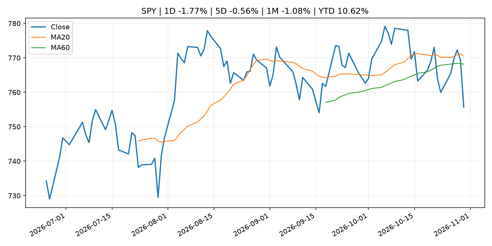
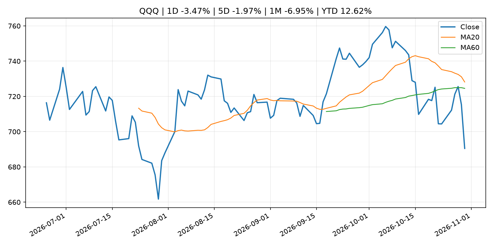
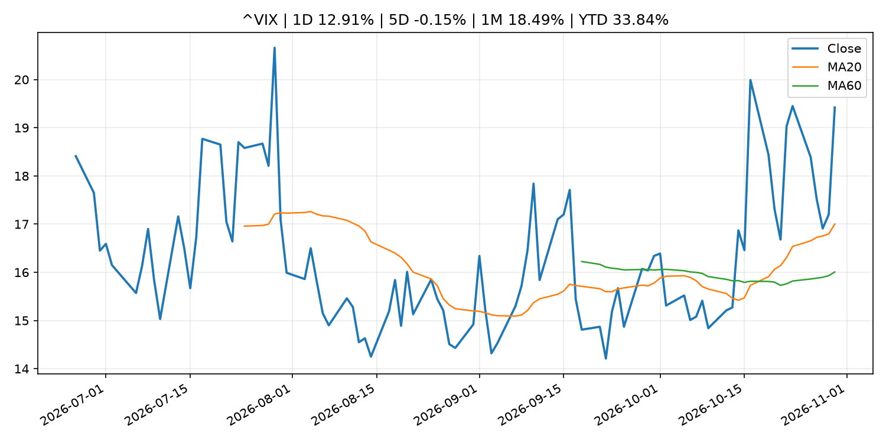
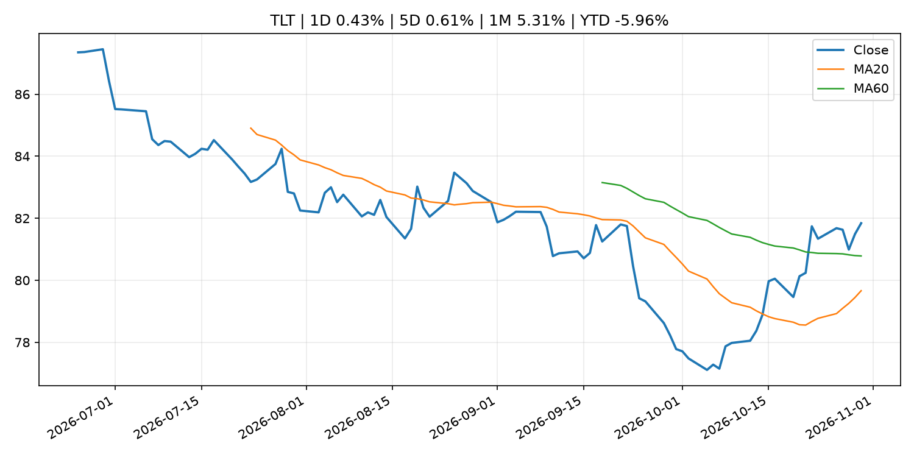
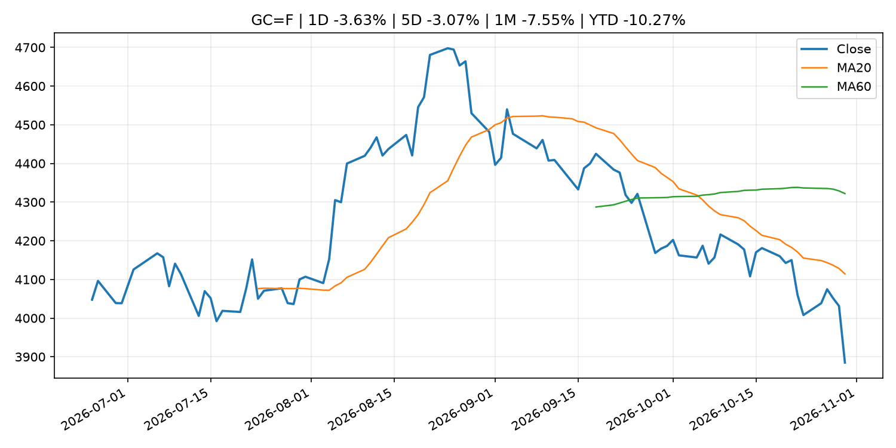
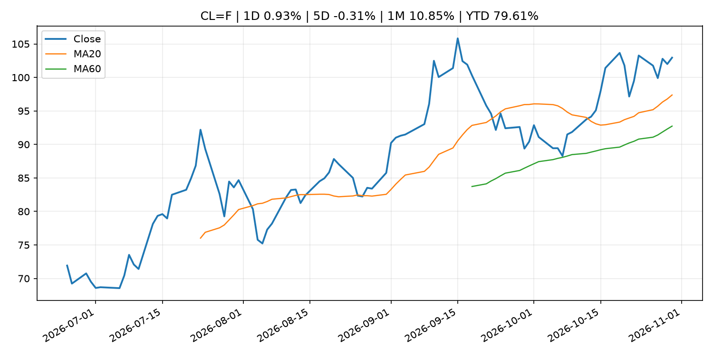
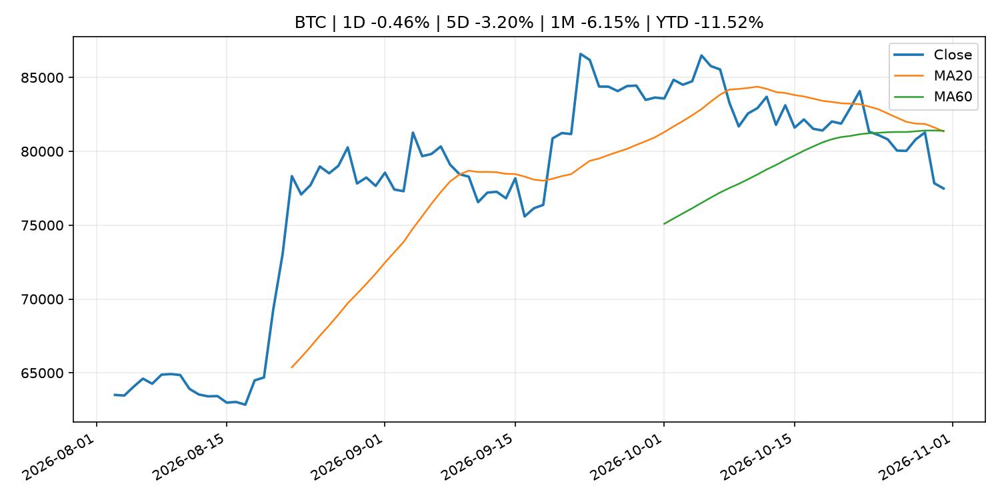
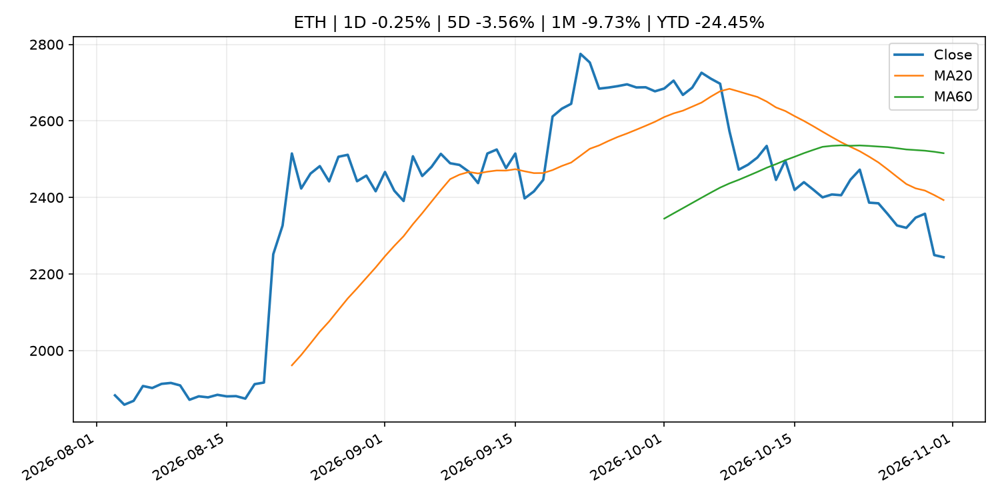
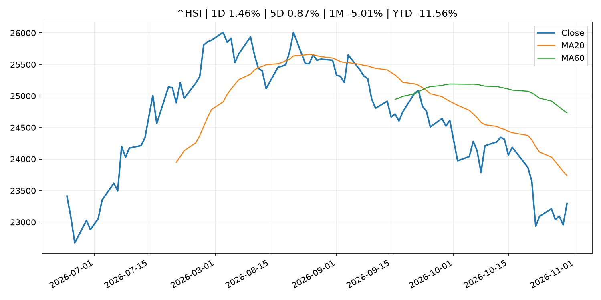

Global Macro Morning Briefing - 2026-10-31
Not financial advice / 非投资建议。
0. 今日总览
- 市场状态：risk_off。股指回落、VIX 抬升且避险资产走强，市场偏风险规避。
- 今日三大主线：
- geopolitical_risk: Why gold plunged to its lowest price in a year despite renewed Iran jitters
- earnings: Microsoft is winning the cloud wars and becoming Wall Street’s new golden child
- regulation: SEC Issues Exemptive Relief from Treasury Clearing Requirements for Certain Inter-Affiliate and Non-U.S. Repo Transactions
- 一句话结论：今日晨报重点关注：地缘风险可能推升避险需求、能源价格和市场波动率。；大型科技股盈利和资本开支会影响纳指、半导体和 AI 交易主线。。跨资产方面，SPY 1D -1.77%；QQQ 1D -3.47%；^VIX 1D 12.91%；TLT 1D 0.43%；GC=F 1D -3.63%；CL=F 1D 0.93%；BTC 1D -0.46%；ETH 1D -0.25%；股指回落、VIX 抬升且避险资产走强，市场偏风险规避。政策、通胀、利率、美元、美债、能源和加密监管仍是主要观察线索。所有结论仅基于公开数据与短摘要整理，不构成投资建议。
1. 隔夜跨资产市场
- 美股：SPY 1D -1.77%，QQQ 1D -3.47%，整体趋势需结合 VIX 和利率确认。
- 美债/美元：TLT 1D 0.43%，美元指数 1D -0.07%，是判断折现率压力的核心线索。
- 黄金/原油：黄金 1D -3.63%，原油 1D 0.93%，用于观察避险、通胀和地缘风险。
- 加密：BTC 1D -0.46%，ETH 1D -0.25%，关注是否独立于纳指走出加密自身行情。
- 港股/A股：恒生 1D 1.46%，沪深300/上证 1D n/a，重点看中国政策预期与人民币线索。
- 风险观察：关注避险是否演变为信用或流动性压力。
US_EQUITY
| symbol | latest close | 1D | 5D | 1M | YTD | trend |
|---|---|---|---|---|---|---|
| SPY | 755.72 | -1.77% | -0.56% | -1.08% | 10.62% | range_bound |
| QQQ | 690.49 | -3.47% | -1.97% | -6.95% | 12.62% | range_bound |
| DIA | 517.13 | -1.07% | -0.81% | 1.67% | 6.93% | downtrend |
| IWM | 279.33 | -1.65% | 1.30% | 0.11% | 12.28% | range_bound |
| VTI | 371.57 | -1.76% | -0.39% | -0.96% | 10.48% | downtrend |
US_MACRO_MARKET
| symbol | latest close | 1D | 5D | 1M | YTD | trend |
|---|---|---|---|---|---|---|
| ^VIX | 19.42 | 12.91% | -0.15% | 18.49% | 33.84% | strong_uptrend |
| DX-Y.NYB | 101.96 | -0.07% | 0.15% | -0.13% | 3.60% | range_bound |
| TLT | 81.84 | 0.43% | 0.61% | 5.31% | -5.96% | range_bound |
| IEF | 91.76 | 0.56% | 0.78% | 2.75% | -4.50% | range_bound |
COMMODITIES
| symbol | latest close | 1D | 5D | 1M | YTD | trend |
|---|---|---|---|---|---|---|
| GC=F | 3,884.90 | -3.63% | -3.07% | -7.55% | -10.27% | strong_downtrend |
| SI=F | 49.13 | -5.86% | -8.52% | -19.09% | -30.36% | strong_downtrend |
| CL=F | 102.95 | 0.93% | -0.31% | 10.85% | 79.61% | strong_uptrend |
| BZ=F | 112.33 | -2.22% | -3.76% | 9.79% | 84.91% | strong_uptrend |
| NG=F | 2.88 | -2.34% | 9.20% | -2.83% | -20.32% | range_bound |
| HG=F | 6.51 | -1.09% | 0.52% | 0.42% | 15.42% | downtrend |
HK_MARKET
| symbol | latest close | 1D | 5D | 1M | YTD | trend |
|---|---|---|---|---|---|---|
| ^HSI | 23,294.42 | 1.46% | 0.87% | -5.01% | -11.56% | strong_downtrend |
| 0700.HK | 383.60 | 1.59% | -0.62% | -11.20% | -38.43% | strong_downtrend |
| 9988.HK | 97.05 | 0.99% | -0.77% | -8.62% | -34.87% | strong_downtrend |
| 3690.HK | 71.60 | 3.47% | -0.07% | 1.63% | -31.55% | downtrend |
| 1810.HK | 26.48 | 3.12% | -1.19% | 5.08% | -34.26% | range_bound |
| 1211.HK | 68.25 | -0.58% | -4.68% | -9.90% | -30.89% | strong_downtrend |
CRYPTO
| symbol | latest close | 1D | 5D | 1M | YTD | trend |
|---|---|---|---|---|---|---|
| BTC | 77,483.61 | -0.46% | -3.20% | -6.15% | -11.52% | strong_downtrend |
| ETH | 2,243.95 | -0.25% | -3.56% | -9.73% | -24.45% | strong_downtrend |
| SOLANA | 96.62 | 1.20% | -4.56% | -11.41% | -22.40% | strong_downtrend |
| BINANCECOIN | 706.84 | 1.40% | -4.18% | -4.71% | -18.07% | downtrend |
| RIPPLE | 1.26 | 1.67% | -2.94% | -9.92% | -31.74% | strong_downtrend |
2. 今日最重要的 10 条新闻
1. Why gold plunged to its lowest price in a year despite renewed Iran jitters
- 来源：MarketWatch Top Stories
- 时间：2026-10-30T21:30:00+00:00
- 地区：US
- 事件类型：geopolitical_risk
- 重要性层级：Tier 1
- 一句话摘要：Safe-haven gold fell to its lowest price in a year, despite jitters around the potential for fresh Middle East attacks following the U.S. midterm elections on Tuesday
- 为什么重要：地缘风险可能推升避险需求、能源价格和市场波动率。
- 可能影响：主要影响 CL=F，方向为 positive，强度 high；供给扰动或 OPEC 减产通常推升 WTI 原油。
- 资产：CL=F 方向：positive 强度：high 原因：供给扰动或 OPEC 减产通常推升 WTI 原油。
- 资产：BZ=F 方向：positive 强度：high 原因：全球供给风险通常直接影响 Brent 原油。
- 资产：SPY 方向：mixed 强度：medium 原因：能源股可能受益，但通胀和成本压力不利于宽基风险资产。
- 原文链接：https://www.marketwatch.com/story/why-gold-plunged-to-its-lowest-price-in-a-year-despite-renewed-iran-jitters-365be0e2?mod=mw_rss_topstories
2. Microsoft is winning the cloud wars and becoming Wall Street’s new golden child
- 来源：MarketWatch Top Stories
- 时间：2026-10-30T20:29:00+00:00
- 地区：US
- 事件类型：earnings
- 重要性层级：Tier 2
- 一句话摘要：Various factors indicate that Microsoft is in a better financial position than its cloud rivals, analysts say.
- 为什么重要：大型科技股盈利和资本开支会影响纳指、半导体和 AI 交易主线。
- 可能影响：主要影响 QQQ，方向为 mixed，强度 high；AI 资本开支会影响大型科技股盈利和估值预期。
- 资产：QQQ 方向：mixed 强度：high 原因：AI 资本开支会影响大型科技股盈利和估值预期。
- 资产：SMH 方向：mixed 强度：high 原因：AI 投资周期直接影响半导体需求。
- 资产：NVDA 方向：mixed 强度：high 原因：AI 训练和推理需求是英伟达收入预期核心变量。
- 资产：MSFT 方向：mixed 强度：medium 原因：云和 AI 资本开支影响利润率与增长叙事。
- 资产：GOOGL 方向：mixed 强度：medium 原因：AI 投资和搜索商业化影响估值。
- 资产：META 方向：mixed 强度：medium 原因：AI 基建支出与广告效率共同影响市场预期。
- 原文链接：https://www.marketwatch.com/story/microsoft-is-winning-the-cloud-wars-and-becoming-wall-streets-new-golden-child-62eecbbd?mod=mw_rss_topstories
3. SEC Issues Exemptive Relief from Treasury Clearing Requirements for Certain Inter-Affiliate and Non-U.S. Repo Transactions
- 来源：SEC Press Releases
- 时间：2026-10-30T15:30:00-04:00
- 地区：US
- 事件类型：regulation
- 重要性层级：Tier 2
- 一句话摘要：The Securities and Exchange Commission took another step forward today to assist broker-dealers and other market participants on the path to central clearing of U.S. Treasury securities by issuing exemptive relief related to inter-affiliate repo…
- 为什么重要：监管变化会改变行业盈利预期和资产风险溢价。
- 可能影响：主要影响 BTC，方向为 mixed，强度 high；加密监管或 ETF 进展会改变 BTC 的资金流和风险溢价。
- 资产：BTC 方向：mixed 强度：high 原因：加密监管或 ETF 进展会改变 BTC 的资金流和风险溢价。
- 资产：ETH 方向：mixed 强度：high 原因：监管框架会影响 ETH 产品化和机构参与度。
- 资产：COIN 方向：mixed 强度：medium 原因：监管清晰度和执法风险会影响交易平台估值。
- 资产：crypto market 方向：mixed 强度：high 原因：信息影响整个加密市场结构，但方向取决于细节。
- 原文链接：https://www.sec.gov/newsroom/press-releases/2026-111-sec-issues-exemptive-relief-treasury-clearing-requirements-certain-inter-affiliate-non-us-repo
4. Two Entities Charged in $130 Million Fraud Scheme That Used False SEC Filings to Boost Investor Confidence
- 来源：SEC Press Releases
- 时间：2026-10-29T12:42:37-04:00
- 地区：US
- 事件类型：regulation
- 重要性层级：Tier 2
- 一句话摘要：The Securities and Exchange Commission today charged two foreign-operated, Colorado-incorporated entities, BG Wealth Sharing Ltd and DSJ Exchange Pty Ltd, for orchestrating a fraud scheme that used false SEC filings to boost confidence in their…
- 为什么重要：监管变化会改变行业盈利预期和资产风险溢价。
- 可能影响：主要影响 BTC，方向为 mixed，强度 high；加密监管或 ETF 进展会改变 BTC 的资金流和风险溢价。
- 资产：BTC 方向：mixed 强度：high 原因：加密监管或 ETF 进展会改变 BTC 的资金流和风险溢价。
- 资产：ETH 方向：mixed 强度：high 原因：监管框架会影响 ETH 产品化和机构参与度。
- 资产：COIN 方向：mixed 强度：medium 原因：监管清晰度和执法风险会影响交易平台估值。
- 资产：crypto market 方向：mixed 强度：high 原因：信息影响整个加密市场结构，但方向取决于细节。
- 原文链接：https://www.sec.gov/newsroom/press-releases/2026-110-two-entities-charged-130-million-fraud-scheme-used-false-sec-filings-boost-investor-confidence
5. From rivals to partners: Polygon and Solana team to bring stablecoin payments to banks
- 来源：CoinDesk
- 时间：2026-10-29T16:35:43+00:00
- 地区：global
- 事件类型：crypto_market_structure
- 重要性层级：Tier 2
- 一句话摘要：From rivals to partners: Polygon and Solana team to bring stablecoin payments to banks
- 为什么重要：加密市场结构和监管变化会影响 BTC、ETH 及相关股票的风险溢价。
- 可能影响：主要影响 BTC，方向为 mixed，强度 high；加密监管或 ETF 进展会改变 BTC 的资金流和风险溢价。
- 资产：BTC 方向：mixed 强度：high 原因：加密监管或 ETF 进展会改变 BTC 的资金流和风险溢价。
- 资产：ETH 方向：mixed 强度：high 原因：监管框架会影响 ETH 产品化和机构参与度。
- 资产：COIN 方向：mixed 强度：medium 原因：监管清晰度和执法风险会影响交易平台估值。
- 资产：crypto market 方向：mixed 强度：high 原因：信息影响整个加密市场结构，但方向取决于细节。
- 原文链接：https://www.coindesk.com/business/2026/10/29/from-rivals-to-partners-polygon-and-solana-team-to-bring-stablecoin-payments-to-banks
6. AMD’s stock slides after Intel earnings reveal two big issues
- 来源：MarketWatch Top Stories
- 时间：2026-10-30T20:28:00+00:00
- 地区：US
- 事件类型：earnings
- 重要性层级：Tier 2
- 一句话摘要：Intel is struggling to make enough AI server chips and dealing with a weak PC market. Investors will soon find out the degree to which AMD may be suffering from the same problems.
- 为什么重要：大型科技股盈利和资本开支会影响纳指、半导体和 AI 交易主线。
- 可能影响：可能影响利率、汇率、风险资产或大宗商品预期，但当前公开信息不足以判断明确方向。
- 资产：暂无明确资产映射
- 方向：unknown
- 强度：low
- 原因：公开信息不足以判断方向。
- 原文链接：https://www.marketwatch.com/story/amds-stock-slides-after-intel-earnings-reveal-two-big-issues-d3afed91?mod=mw_rss_topstories
7. ECB President Lagarde to step down on 7 February 2027
- 来源：ECB Press Releases
- 时间：2026-10-29T11:00:00+01:00
- 地区：EU
- 事件类型：central_bank_speech
- 重要性层级：Tier 2
- 一句话摘要：ECB President Lagarde to step down on 7 February 2027
- 为什么重要：央行官员表态可能影响市场对下一次会议的定价。
- 可能影响：可能影响利率、汇率、风险资产或大宗商品预期，但当前公开信息不足以判断明确方向。
- 资产：暂无明确资产映射
- 方向：unknown
- 强度：low
- 原因：公开信息不足以判断方向。
- 原文链接：https://www.ecb.europa.eu//press/pr/date/2026/html/ecb.pr261029~abbb6dc64b.en.html
8. Warsh wants the Fed to say less. Two officials are pushing for more transparency.
- 来源：MarketWatch Top Stories
- 时间：2026-10-30T21:23:00+00:00
- 地区：US
- 事件类型：other
- 重要性层级：Tier 3
- 一句话摘要：More interest-rate hikes are needed to fight inflation, Fed officials say.
- 为什么重要：这条信息暂未匹配到重大宏观、政策或市场事件，更适合作为背景跟踪。
- 可能影响：主要影响 DXY，方向为 positive，强度 high；通胀压力可能推高政策利率预期并支撑美元。
- 资产：DXY 方向：positive 强度：high 原因：通胀压力可能推高政策利率预期并支撑美元。
- 资产：TLT 方向：negative 强度：high 原因：通胀上行通常推升收益率、压低长债价格。
- 资产：QQQ 方向：negative 强度：high 原因：更高利率对成长股估值折现率不利。
- 资产：SPY 方向：mixed 强度：medium 原因：名义增长可能支撑收入，但更高利率压制估值。
- 资产：GC=F 方向：mixed 强度：medium 原因：通胀对黄金是支撑，但实际利率上行会形成压力。
- 资产：BTC 方向：mixed 强度：medium 原因：抗通胀叙事和流动性收紧可能相互抵消。
- 原文链接：https://www.marketwatch.com/story/the-fed-held-interest-rates-steady-but-these-officials-see-more-hikes-coming-soon-2098bbd8?mod=mw_rss_topstories
9. (Reference) Outlook Report and Indicators Related to Underlying Inflation
- 来源：Bank of Japan Announcements
- 时间：2026-10-30T12:02:00+09:00
- 地区：Japan
- 事件类型：other
- 重要性层级：Tier 3
- 一句话摘要：(Reference) Outlook Report and Indicators Related to Underlying Inflation
- 为什么重要：这条信息暂未匹配到重大宏观、政策或市场事件，更适合作为背景跟踪。
- 可能影响：主要影响 DXY，方向为 positive，强度 high；通胀压力可能推高政策利率预期并支撑美元。
- 资产：DXY 方向：positive 强度：high 原因：通胀压力可能推高政策利率预期并支撑美元。
- 资产：TLT 方向：negative 强度：high 原因：通胀上行通常推升收益率、压低长债价格。
- 资产：QQQ 方向：negative 强度：high 原因：更高利率对成长股估值折现率不利。
- 资产：SPY 方向：mixed 强度：medium 原因：名义增长可能支撑收入，但更高利率压制估值。
- 资产：GC=F 方向：mixed 强度：medium 原因：通胀对黄金是支撑，但实际利率上行会形成压力。
- 资产：BTC 方向：mixed 强度：medium 原因：抗通胀叙事和流动性收紧可能相互抵消。
- 原文链接：http://www.boj.or.jp/en/mopo/mpmdeci/mpr_2026/k261030b.pdf
3. 政策与央行观察
1. SEC Issues Exemptive Relief from Treasury Clearing Requirements for Certain Inter-Affiliate and Non-U.S. Repo Transactions
- 来源：SEC Press Releases
- 时间：2026-10-30T15:30:00-04:00
- 地区：US
- 事件类型：regulation
- 重要性层级：Tier 2
- 一句话摘要：The Securities and Exchange Commission took another step forward today to assist broker-dealers and other market participants on the path to central clearing of U.S. Treasury securities by issuing exemptive relief related to inter-affiliate repo…
- 为什么重要：监管变化会改变行业盈利预期和资产风险溢价。
- 可能影响：主要影响 BTC，方向为 mixed，强度 high；加密监管或 ETF 进展会改变 BTC 的资金流和风险溢价。
- 资产：BTC 方向：mixed 强度：high 原因：加密监管或 ETF 进展会改变 BTC 的资金流和风险溢价。
- 资产：ETH 方向：mixed 强度：high 原因：监管框架会影响 ETH 产品化和机构参与度。
- 资产：COIN 方向：mixed 强度：medium 原因：监管清晰度和执法风险会影响交易平台估值。
- 资产：crypto market 方向：mixed 强度：high 原因：信息影响整个加密市场结构，但方向取决于细节。
- 原文链接：https://www.sec.gov/newsroom/press-releases/2026-111-sec-issues-exemptive-relief-treasury-clearing-requirements-certain-inter-affiliate-non-us-repo
2. Two Entities Charged in $130 Million Fraud Scheme That Used False SEC Filings to Boost Investor Confidence
- 来源：SEC Press Releases
- 时间：2026-10-29T12:42:37-04:00
- 地区：US
- 事件类型：regulation
- 重要性层级：Tier 2
- 一句话摘要：The Securities and Exchange Commission today charged two foreign-operated, Colorado-incorporated entities, BG Wealth Sharing Ltd and DSJ Exchange Pty Ltd, for orchestrating a fraud scheme that used false SEC filings to boost confidence in their…
- 为什么重要：监管变化会改变行业盈利预期和资产风险溢价。
- 可能影响：主要影响 BTC，方向为 mixed，强度 high；加密监管或 ETF 进展会改变 BTC 的资金流和风险溢价。
- 资产：BTC 方向：mixed 强度：high 原因：加密监管或 ETF 进展会改变 BTC 的资金流和风险溢价。
- 资产：ETH 方向：mixed 强度：high 原因：监管框架会影响 ETH 产品化和机构参与度。
- 资产：COIN 方向：mixed 强度：medium 原因：监管清晰度和执法风险会影响交易平台估值。
- 资产：crypto market 方向：mixed 强度：high 原因：信息影响整个加密市场结构，但方向取决于细节。
- 原文链接：https://www.sec.gov/newsroom/press-releases/2026-110-two-entities-charged-130-million-fraud-scheme-used-false-sec-filings-boost-investor-confidence
3. From rivals to partners: Polygon and Solana team to bring stablecoin payments to banks
- 来源：CoinDesk
- 时间：2026-10-29T16:35:43+00:00
- 地区：global
- 事件类型：crypto_market_structure
- 重要性层级：Tier 2
- 一句话摘要：From rivals to partners: Polygon and Solana team to bring stablecoin payments to banks
- 为什么重要：加密市场结构和监管变化会影响 BTC、ETH 及相关股票的风险溢价。
- 可能影响：主要影响 BTC，方向为 mixed，强度 high；加密监管或 ETF 进展会改变 BTC 的资金流和风险溢价。
- 资产：BTC 方向：mixed 强度：high 原因：加密监管或 ETF 进展会改变 BTC 的资金流和风险溢价。
- 资产：ETH 方向：mixed 强度：high 原因：监管框架会影响 ETH 产品化和机构参与度。
- 资产：COIN 方向：mixed 强度：medium 原因：监管清晰度和执法风险会影响交易平台估值。
- 资产：crypto market 方向：mixed 强度：high 原因：信息影响整个加密市场结构，但方向取决于细节。
- 原文链接：https://www.coindesk.com/business/2026/10/29/from-rivals-to-partners-polygon-and-solana-team-to-bring-stablecoin-payments-to-banks
4. ECB President Lagarde to step down on 7 February 2027
- 来源：ECB Press Releases
- 时间：2026-10-29T11:00:00+01:00
- 地区：EU
- 事件类型：central_bank_speech
- 重要性层级：Tier 2
- 一句话摘要：ECB President Lagarde to step down on 7 February 2027
- 为什么重要：央行官员表态可能影响市场对下一次会议的定价。
- 可能影响：可能影响利率、汇率、风险资产或大宗商品预期，但当前公开信息不足以判断明确方向。
- 资产：暂无明确资产映射
- 方向：unknown
- 强度：low
- 原因：公开信息不足以判断方向。
- 原文链接：https://www.ecb.europa.eu//press/pr/date/2026/html/ecb.pr261029~abbb6dc64b.en.html
4. 市场异动与图表
- SPY 下跌 -1.77%
- QQQ 下跌 -3.47%
- VIX 上涨 12.91%
- TLT 上涨 0.43%
- Gold 下跌 -3.63%
SPY

QQQ

^VIX

TLT

GC=F

CL=F

BTC

ETH

^HSI

5. 华尔街与机构公开观点
- 暂无可靠公开观点。
6. 今日重点关注
- 经济数据：经济数据：暂无可靠公开日历数据；如配置经济日历源后可自动填充。
- 央行讲话：央行讲话：暂无可靠公开日历数据；重点跟踪 Fed、ECB、BoJ、PBOC 官网 RSS。
- 财报：财报：暂无可靠数据。
- 政策事件：政策事件：暂无可靠数据。
- 风险提醒：风险提醒：关注数据源失败项、突发地缘风险、利率和美元的二阶反应。
7. 英文金融表达与宏观概念
- inflation expectations：通胀预期，指家庭、企业或市场对未来通胀的预估。 例句：Inflation expectations can shape wage bargaining and bond yields.
- real yield：实际收益率，名义利率扣除通胀预期后的收益率。 例句：Gold often reacts more to real yields than nominal yields.
- terminal rate：终端利率，市场预期本轮加息周期的最高政策利率。 例句：A higher terminal rate can pressure growth stocks.
- risk-off：避险模式，资金偏向美元、国债、黄金等防御资产。 例句：A geopolitical shock can push markets into risk-off mode.
- supply disruption：供给扰动，通常指能源或商品供应受冲突、减产或天气影响。 例句：Supply disruption can lift oil prices and inflation expectations.
- market structure：市场结构，指交易、托管、清算、ETF、监管等制度安排。 例句：Crypto market structure rules can affect institutional participation.
8. 背景材料
- This cybersecurity stock will be the next to join the S&P 500（MarketWatch Top Stories，other）：Okta is slated to join the index on Wednesday, replacing Kenvue.
- Warsh wants the Fed to say less. Two officials are pushing for more transparency.（MarketWatch Top Stories，other）：More interest-rate hikes are needed to fight inflation, Fed officials say.
- Philip R. Lane: AI adoption in Europe（ECB Press Releases，other）：Philip R. Lane: AI adoption in Europe
- Decisions taken by the Governing Council of the ECB (in addition to decisions setting interest rates)（ECB Press Releases，other）：Decisions taken by the Governing Council of the ECB (in addition to decisions setting interest rates)
- Here's how big bitcoin traders responded after the Binance hack hit（CoinDesk，other）：Here's how big bitcoin traders responded after the Binance hack hit
- Crypto liquidations jump to $1.57 billion as Binance hack sends bitcoin, ether lower（CoinDesk，other）：Crypto liquidations jump to $1.57 billion as Binance hack sends bitcoin, ether lower
- Results of the ECB Survey of Professional Forecasters for the fourth quarter of 2026（ECB Press Releases，other）：Results of the ECB Survey of Professional Forecasters for the fourth quarter of 2026
- Live updates: Bitcoin falls below $77,000 as Binance exploit combines with tech woes（CoinDesk，other）：Live updates: Bitcoin falls below $77,000 as Binance exploit combines with tech woes
- Quarterly Schedule of Outright Purchases of Japanese Government Bonds (Competitive Auction Method) (October-December 2026) (Schedule Updates)（Bank of Japan Announcements，other）：Quarterly Schedule of Outright Purchases of Japanese Government Bonds (Competitive Auction Method) (October-December 2026) (Schedule Updates)
- Timetable and Schedule of U.S. Dollar Funds-Supplying Operations (November 2026-March 2027)（Bank of Japan Announcements，other）：Timetable and Schedule of U.S. Dollar Funds-Supplying Operations (November 2026-March 2027)
- Bitcoin, ether and XRP selloff wipes out $1.5 billion in leveraged crypto bets（CoinDesk，other）：Bitcoin, ether and XRP selloff wipes out $1.5 billion in leveraged crypto bets
- Amendment to "Basic Principles for Disposal of ETFs and J-REITs"（Bank of Japan Announcements，other）：Amendment to "Basic Principles for Disposal of ETFs and J-REITs"
- Binance hacker splits $1.4 billion of bitcoin into 19 wallets that no one can freeze（CoinDesk，other）：Binance hacker splits $1.4 billion of bitcoin into 19 wallets that no one can freeze
- Standard Chartered sees more pain after $6 billion Binance hack sends bitcoin lower（CoinDesk，other）：Standard Chartered sees more pain after $6 billion Binance hack sends bitcoin lower
- Outlook for Economic Activity and Prices (October 2026, The Bank's View)（Bank of Japan Announcements，other）：Outlook for Economic Activity and Prices (October 2026, The Bank's View)
- Statement on Monetary Policy（Bank of Japan Announcements，other）：Statement on Monetary Policy
- (Reference) Outlook Report and Indicators Related to Underlying Inflation（Bank of Japan Announcements，other）：(Reference) Outlook Report and Indicators Related to Underlying Inflation
- (Reference) Decisions regarding a Change in the Pace of Sales of ETFs (October 2026)（Bank of Japan Announcements，other）：(Reference) Decisions regarding a Change in the Pace of Sales of ETFs (October 2026)
- Payment and Settlement Statistics (Sept.)（Bank of Japan Announcements，other）：Payment and Settlement Statistics (Sept.)
- Federal Reserve Board announces approval of application by The Bank of Nova Scotia（Federal Reserve Press Releases，other）：Federal Reserve Board announces approval of application by The Bank of Nova Scotia
9. 数据源、失败项与免责声明
- 采集时间：2026-10-31T01:27:29
- 数据源：公开 RSS、Yahoo Finance、CoinGecko、AKShare、FRED、SEC data.sec.gov，以及用户自有 inputs/reports 文件。
- 合规说明：不绕过 WSJ、Bloomberg、FT、Reuters 等付费墙；对付费媒体只使用公开 RSS 标题、摘要、链接和发布时间。
- 免责声明：Not financial advice / 非投资建议。本项目仅供个人学习、研究和信息整理，不构成投资建议、交易建议或任何收益承诺。
- 失败或跳过的数据源：
- crypto data failed coin=dogecoin
- China market data failed symbol=上证指数: empty dataframe
- China market data failed symbol=深证成指: empty dataframe
- China market data failed symbol=创业板指: empty dataframe
- China market data failed symbol=沪深300: empty dataframe
- China market data failed symbol=中证500: empty dataframe
- China market data failed symbol=科创50: empty dataframe
- FRED_API_KEY not set; skipping FRED macro series
- SEC failed cik=0000320193
- SEC failed cik=0000789019
- SEC failed cik=0001045810
- SEC failed cik=0001318605
- SEC failed cik=0001577552